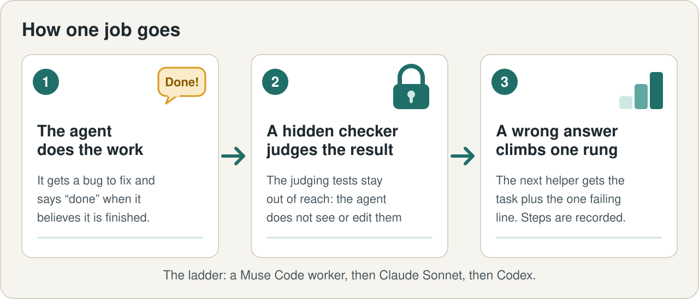

Features / Roles and rules
Roles and enforced rules Planned
Architect, manager and worker: who may do what, and rules a program enforces (secrets, no-push, budgets), written down once.
What it does
Agents are most useful when they work inside rules they cannot quietly bend. ANIMA's design comes from how we run our own work: an architect decides, a manager splits the mission into task cards, workers do one job each in one folder, a program enforces the rules, and a hidden checker judges the result. ANIMA turns that into one file and a few commands that work on any harness.
The five parts, and what each is today
| Part | State | What exists today | Limits |
|---|---|---|---|
| A hidden checker judges every answer | Prototype | Validated on one kind of job (fix a bug, judged by hidden tests): in a recorded run of nine real jobs, seven answers were right the first time and two wrong "done" answers were caught. The checker's code ships in this repository, and it judged live fresh-clone runs that ended VERDICT PASS. | One kind of job. The nine-job run used our earlier driver, so only the record of that run can be re-checked from here. |
| A wrong answer climbs to a stronger helper | Prototype | The ladder code ships in this repository. In the recorded run both wrong answers went one rung up to Claude Sonnet, which fixed them. The Codex rung was not needed. | The second helper was told the failing line, so it was an informed retry, not a blind one. One run, nine jobs. |
| A record nobody can quietly edit | Working today | The 69-record log of the nine-job run, a checker script anyone can run in a second, and a page that does the same check in your browser. | The seal shows the record was not changed afterwards. It cannot show that the run itself was honest. The check does not re-run the nine jobs. |
| Rules that are enforced | Planned | We run a larger version of this on our own work. It is not part of ANIMA today. | Blocking before the action runs is proven only on Claude Code, which has per-action hooks. Budgets are in the design, not in this first pack. |
| Roles and a mission file | Planned | The roles and the file format are written down as a design. No program reads the file today. | Design only. |
The ladder

Roles
Design only. Nothing enforces these yet.
| Role | May | Must not | Checked by |
|---|---|---|---|
| You (the owner) | Set the mission, deadlines and budgets. Alone approve spending and anything public. | Be pinged for small things: questions are batched, each with a default. | No one. You read a digest. |
| Architect | Decide the design, rule on conflicts, review at gates. | Do bulk work, push to a public repository, read secrets. | The rules, a second opinion, you. |
| Coordinator | Routine operations: pick up briefs, re-issue blocked results, keep queues stocked. | Decide design, spend, publish, cancel workers. | The architect, through a digest. |
| Manager (one per project) | Split the mission into cards whose test is a file. Accept or reject output. | Change the mission, publish. | The architect. |
| Worker | One job, one folder: read the brief, write in its workspace, run tests. | Read secrets, message the owner, push, cancel other workers. | The rules, a supervisor, the manager’s acceptance file, the hidden checker. |
One file
Design, nothing reads this file yet. Roles, permissions, budgets, watches and the ladder are data, so one file can work on any harness. Only the harness line and the way the rules are enforced change.
version: 1
harness: muse # or: claude, codex
mission: MISSION.md # the manager enforces it
memory: {kind: trace, store: .anima/trace}
roles:
manager:
may: [read_repo, write_cards, accept_or_reject]
must_not: [push, edit_mission]
worker:
may: [read_workspace, write_workspace, run_tests]
must_not: [secrets, push, message_owner]
budget: {timeout_s: 3000, attempts: 3}
rules: [secrets, sudo, push-public, delete-protected]
ladder: # first match wins
- {on: gate_fail, do: retry_with_failure_line, times: 1}
- {on: gate_fail, do: run_with, harness: claude}
- {on: still_failing, do: ask, role: architect}
Also in the design, none of it built
- Budgets and time limits per role, with a warning at 90% of the budget.
- Model pins: each role may only use the model it is assigned.
- A watch that restarts a worker that has gone quiet, starting in a log-only mode.
- Memory and disk guards that pause new work when the machine is short.
The full design, including what we run on our own work today and which controls ANIMA does not have yet: docs/ROLES-AND-RULES.md.
What exists today
A design only, written down in docs/ROLES-AND-RULES.md with what exists marked. No program reads the file or enforces the rules today. The checker, the ladder and the record, which do exist in some form, are on the checker page.
Limits
Designed from how we actually run our own work. Of the ten controls in the design, ANIMA has two today (the work ladder and the verification gate), and both are on the checker page.
What it will do
One file, anima.yaml, holds roles, permissions, budgets, watches and the ladder, so it works on any harness.
How to check it
Evidence file in this repository: docs/ROLES-AND-RULES.md
How to check it
Run:
python3 docs/evidence/flagship-run3/check_chain.py --tamperEvidence file in this repository: docs/evidence/flagship-run3/check_chain.py